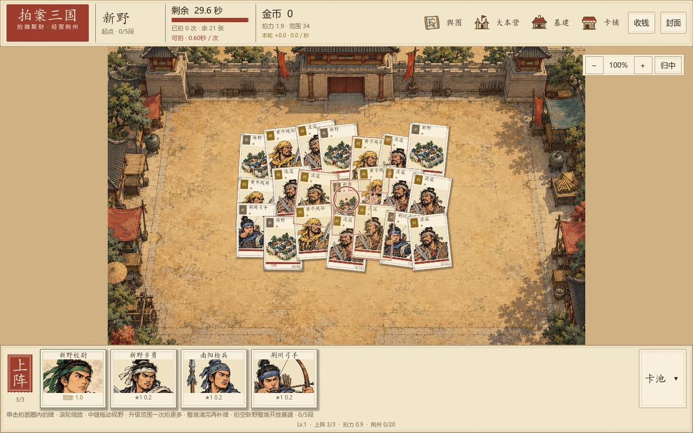
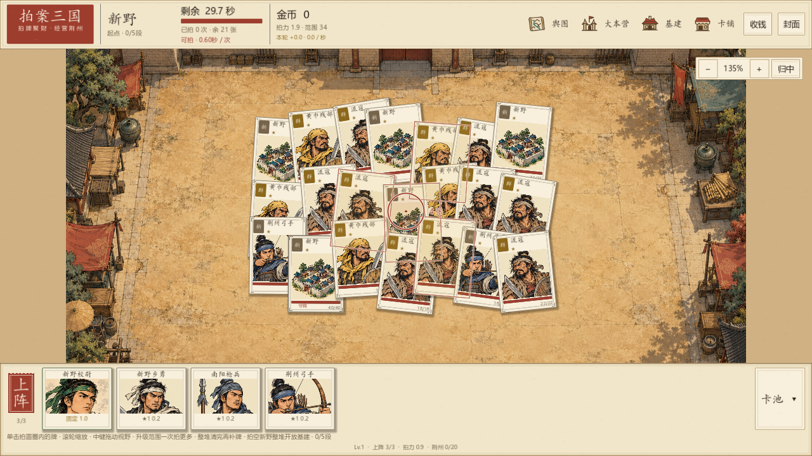
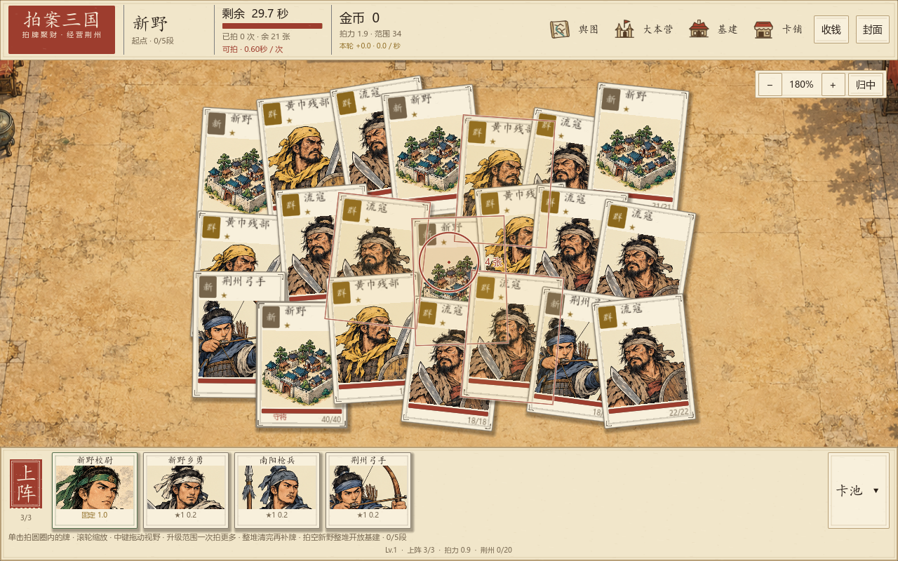
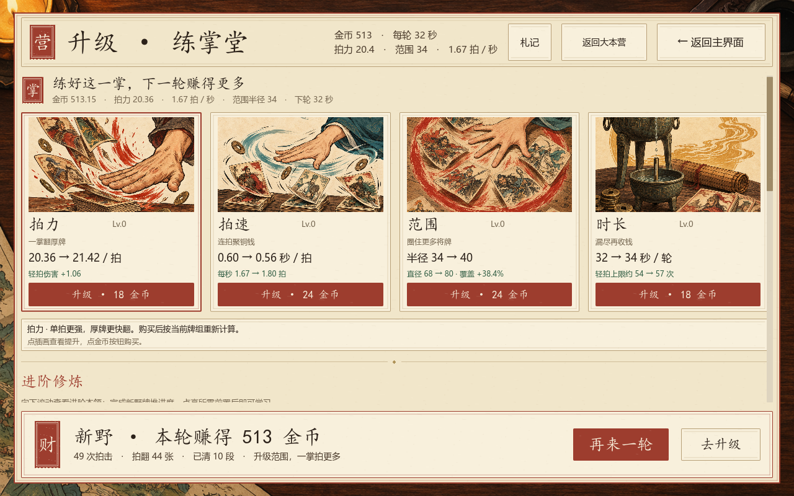
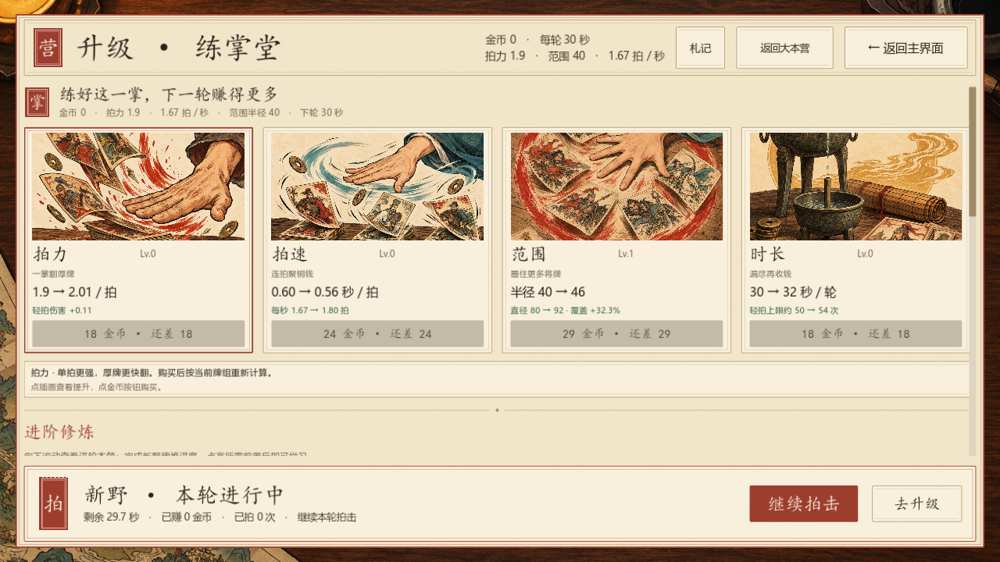

整城牌堆 · 缩放与瞄准
左键圆圈内多牌共用一掌滚轮鼠标位置缩放中键拖动平移归中恢复完整视野

新野首轮同时铺出21张牌。清段保留剩余牌；整堆清完才补牌。
查看 1280×720 的城池玩法

135%镜头下，小圆圈、牌堆与缩放控件可正常使用。同一镜头 · 小圆圈与扩圈后
下面两张画面均为180%镜头、同一瞄准点。缩放不改变实际范围；升级才会扩大覆盖。点击切换查看。

初始范围：在同一个瞄准点覆盖4张。圆与牌边相交即可命中。
扩圈画面通过真实Godot鼠标单击触发：一次拍中8张，只计一掌，产生15.2伤害和6.84金币。范围等级使用截图测试档展示。
四项核心升级 · 范围立即生效
拍力、拍速、范围、时长一起展示当前值到下一级。范围首次24金币，半径34→40，覆盖面积约+38.4%；每级+6，最多20级。

通过当前圆圈拍击流程完成一轮后回营，范围卡执行真实购买与存档。
查看 720 高度升级页

包含范围的四张核心卡均可操作。此测试档金币为0，按钮按实际余额显示缺口。新生成素材 · 已接入游戏
由内置ImageGen生成，原图保存到 assets/art_v10；最终完整提示词与路径清单。
验证完成
牌堆与镜头 230 / 230赚钱循环 438 / 438升级页 160 / 160卡牌美术 5569 / 5569建筑组合 88 / 88